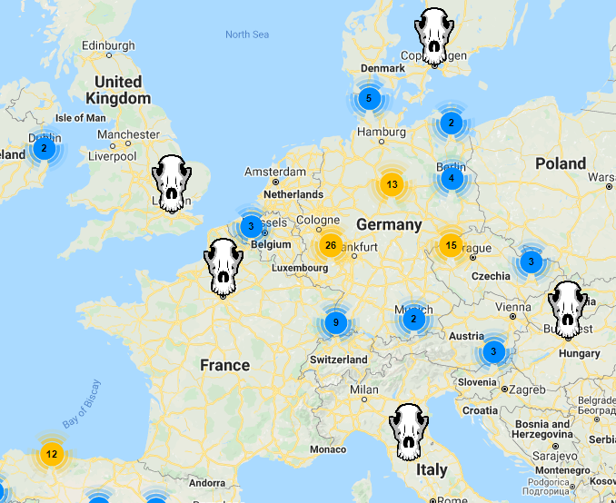
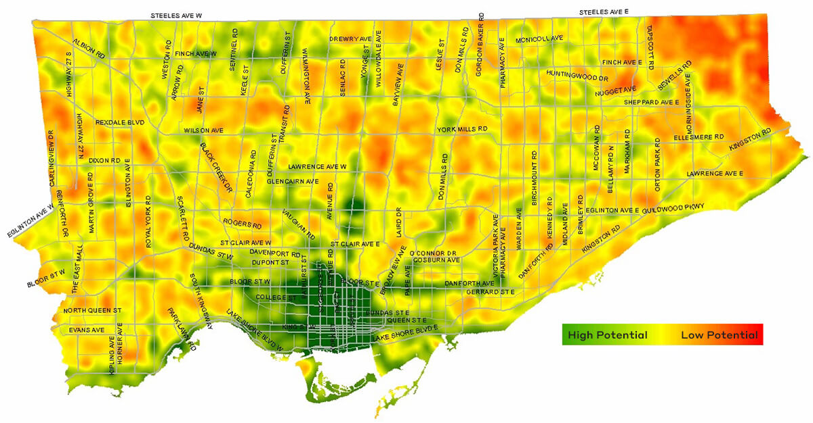
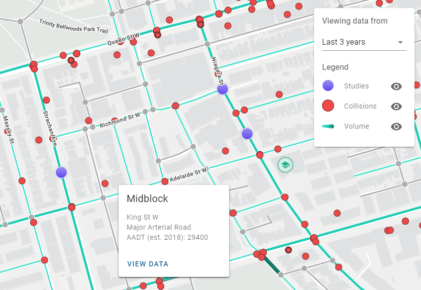
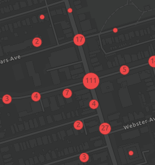
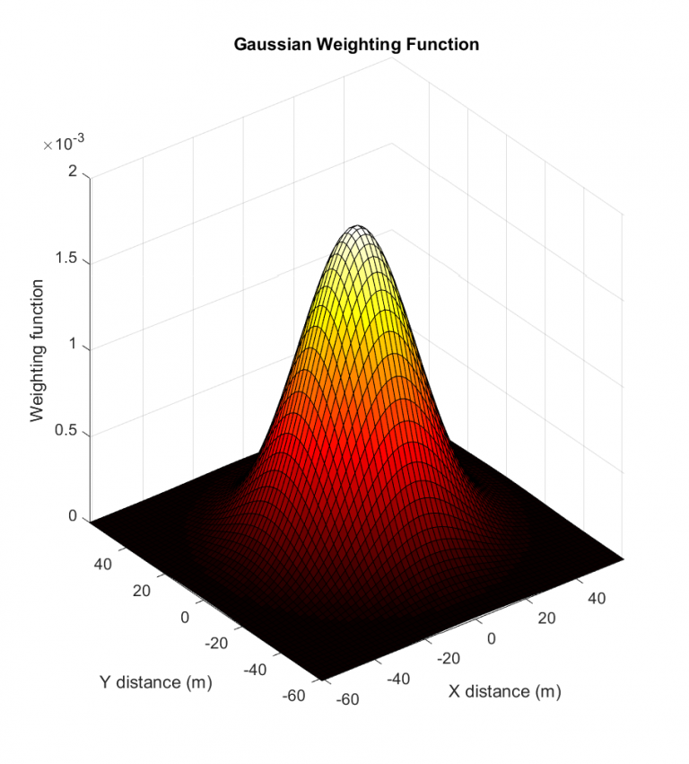
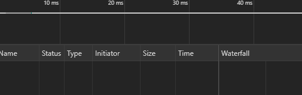
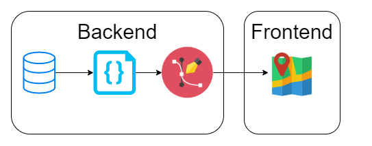
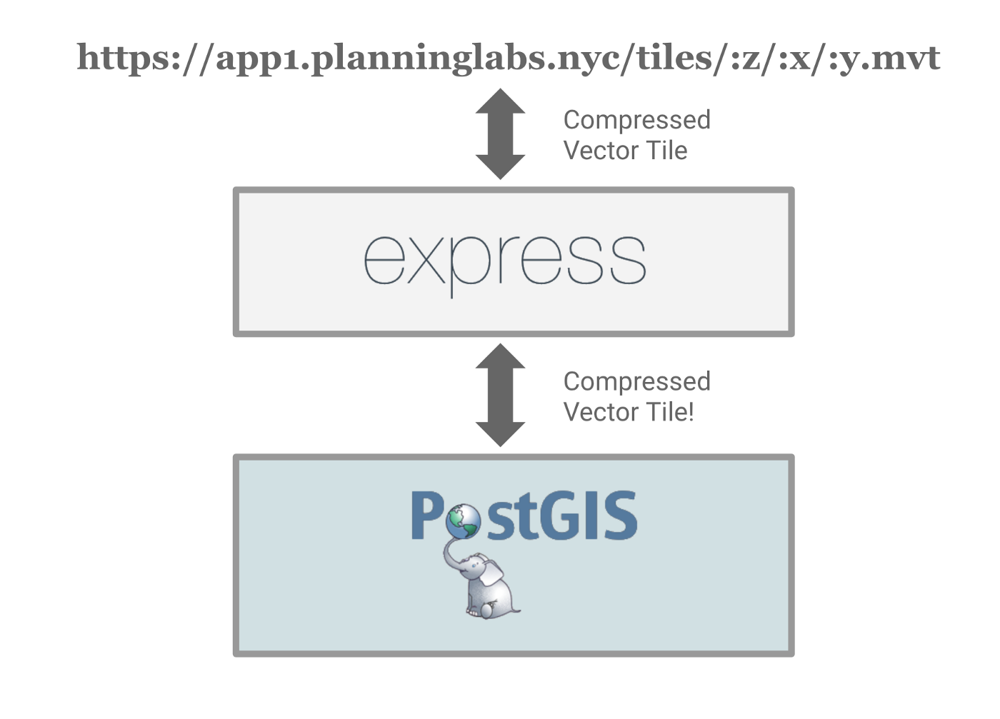

Map All The Things
With Mapbox GL
Evan Savage
hi everyone! welcome to Map All The Things with Mapbox GL. i'm Evan Savage.
about me
Code for Canada developer fellow working with City of Toronto on MOVE, which is a project
to bring decades of the City's collision and traffic volume data into a single platform.
civic data ♥ maps
a lot of data governments (and people) care about is geospatial: you can and should
put it on a map. that's long been the case, as you can see from this 1915 map
exploring how people get around Toronto.
so geospatial data's nothing new. what's new is the size of that data.
on the MOVE project, for instance, we handle 1.5M collisions and 120M
traffic volume readings.
wat
to put those numbers in context, here's a map of all schools and
educational institutions in Toronto.
everyone has seen a map like this. it's slow to load, and impossible
to tell what's going on - and there's only 1200 markers!
important questions
how can we render this much data?
how can we understand this much data?
how can we process this much data?
so that's what this talk is about: how do we handle this much data?
going to focus on three important questions.
to handle larger datasets on maps, we need performant tools for
rendering a lot of data at once.
to understand these datasets, we need to carefully present it.
and to handle especially large or complex datasets, we need to process it ahead
of time to make these first two things possible.
rendering
how can we render this much data?
how can we understand this much data?
how can we process this much data?
let's start with rendering: showing the data, period.
hello, world!
to render data in MOVE, we use a library called Mapbox GL.
it's not the only mapping library out there: Leaflet and OpenLayers.
that said, it has a number of very useful features, as we'll see
throughout this presentation.
hello, Mapbox GL!
/* const basemapStyle = ... */
/* const $mapContainer = ... */
const options = {
container: $mapContainer,
dragRotate: false,
keyboard: false,
pitchWithRotate: false,
renderWorldCopies: true,
style: basemapStyle,
};
const map = new mapboxgl.Map(options);
as with most complex graphics, maps are often built out of layers. the bottom-most
layer is your basemap, with everything from continents to streets, parks, and buildings.
in web mapping, you need a container div to store your map in. Mapbox GL is no different.
I've disabled a bunch of Mapbox GL's 3D navigation features for this talk - so I won't
be showing those off, but with the right data they're really awesome. finally we load all
of these options into a map object.
hello, Toronto!
for this talk, I'll be focusing on data from Toronto. that means we need to put
Toronto in its rightful place at the center of the universe. just as with other
mapping libraries, you can set minimum and maximum zoom levels as well as a bounding
box for panning. unlikely that you need all zoom levels.
exporting GeoJSON
COPY (
WITH features AS (
SELECT
collision_id AS "id", geom,
ksi, cyclist, pedestrian
FROM collisions.events
WHERE accdate >= now() - interval '3 year'
),
geojson_features AS (
SELECT jsonb_build_object(
'type', 'Feature',
'id', id,
'geometry', ST_AsGeoJSON(geom)::jsonb,
'properties', to_jsonb(features.*) - 'id' - 'geom'
) AS feature
FROM features
)
SELECT jsonb_build_object(
'type', 'FeatureCollection',
'features', jsonb_agg(feature)
) AS feature_collection
FROM geojson_features
) TO STDOUT WITH (HEADER FALSE);
next up: our dataset. I'm using the collisions dataset from MOVE. can't share this
quite yet, but we're in the process of publishing through Open Data.
I'm using the last 3 years, or about 150k collisions. I pull those out of the
database: in Mapbox GL, each feature needs an ID and a geometry; you can also
add more properties. we can then take those features and convert them to
GeoJSON features using JSON functions in PostgreSQL. then we can aggregate
them all into a GeoJSON feature collection and dump that out.
exporting GeoJSON
# save that SQL query as download_collisions.sql, then:
env $(xargs < "/home/ec2-user/cot-env.config") psql \
-v ON_ERROR_STOP=1 \
-f download_collisions.sql > collisions.geojson
we store this SQL query in a file download_collisions.sql and run it, storing
its output into a GeoJSON file.
loading GeoJSON
let collisions = null;
async function getJson(url) {
const response = await fetch(url);
return response.json();
}
async function initMapbox() {
collisions = await getJson('collisions.geojson');
// ...
}
we can then use the Fetch API available in modern browsers to load this
data into a JavaScript object.
using GeoJSON
map.addSource('collisions', {
type: 'geojson',
data: collisions,
buffer: 0,
});
map.addLayer({
id: 'collisionsPoints',
source: 'collisions',
type: 'circle',
minzoom: ZOOM_LEVEL_3,
maxzoom: ZOOM_LEVEL_0,
paint: {
'circle-color': COLOR_COLLISION_FILL,
'circle-radius': 6.5,
'circle-stroke-color': COLOR_COLLISION_STROKE,
'circle-stroke-width': 1,
},
});
now the fun part. we start with source: GeoJSON type, using our newly loaded
collisions data. we then create layer: give it an ID, tie it to the collisions
source, and use type circle - we're going to draw circles for each data point.
in Mapbox GL, you can style your layers. here we're telling it how to draw
these circles: what color, what outline, how big.
we can do better
takes a while to load: as we'll discuss in a bit, Mapbox GL is doing a lot of work up
front to make sure we can navigate this smoothly once it loads.
the result is pretty jarring, and in more ways than one. first: that's 150k collisions
over 3 years. 50k per year, 150 per day, 6 per hour. even though most are minor, the
human impact of this is staggering.
this map doesn't do the dataset justice. you can see there's a lot of collisions,
but it's impossible to get much more than that.
that said, once it loads, we can navigate pretty smoothly. if you've ever tried loading
150k div markers on a mapping library, it's not this smooth.
tiling
so what is Mapbox GL doing in those first few seconds? it's building vector tiles on the
fly! pretty much every web map works this way: you divide your data into tiles at
different zoom levels. at each zoom level, you split the previous level's tiles into
four smaller tiles. you can then show different amounts of detail at different zoom levels.
your data on vector tiles
note I said vector tiles. in days of yore, you'd get your data out of database or
wherever as a shapefile, then you'd pick a style, then you'd render that data down
to raster image tiles, and you'd serve those pre-rendered tiles to the client. if
you wanted to change the style, you had to rebuild your tiles from scratch.
now, we still need to get the data - this time in GeoJSON format - but we can send
that data down to the client, build vector tiles on the fly, then style them however
we want! this makes it much faster to iterate on web maps.
understanding
how can we render this much data?
how can we understand this much data?
how can we process this much data?
so we can render data easily with Mapbox GL, and aside from a bit of loading time it
works with midsized datasets quite well. we're still not helping users understand
this much data, though. what can we do? we'll explore three ways of dealing with
this:
what to do?

clustering, where you group nearby points;
what to do?

heatmaps, where you blur points together;
what to do?

and visual differentiation, where you style various parts of your data
in different ways.
clustering
group nearby points. reduces clutter, but loses location precision!
clustered sources
map.addSource('collisionsClustered', {
type: 'geojson',
data: collisions,
cluster: true,
clusterMaxZoom: ZOOM_LEVEL_0,
clusterRadius: 30,
});
same GeoJSON source as before. add cluster option. we can change the cluster radius
to adjust the tradeoff between clutter and precision.
clustered layers
defining three layers:
'collisionsClustered' for cluster circles'collisionsClusteredCount' for cluster counts'collisionsUnclustered' for point circles

to display this, we now need 3 layers instead of 1. the first two draw the clustered
circles with a label showing how many points are in the cluster. the last one handles
points that are by themselves, not in a cluster. we need two for the clusters because
of how Mapbox GL styles work: we need to style the circle and the text separately.
heatmaps
blur points together. good for visualizing density, but doesn't work so
well with sparse data.
it's all a blur

heatmap shader
heatmaps work by blurring your points across a radius, then adding all those
blurred points up. by adding enough peaks and sides of peaks together, we get
hotspots. math aside, the key here for our purposes is that this can be done
efficiently using GL shaders.
it's all a blur
map.addLayer({
id: 'collisionsHeatmap',
source: 'collisions',
type: 'heatmap',
minzoom: ZOOM_LEVEL_3,
maxzoom: ZOOM_LEVEL_0,
paint: {
'heatmap-color': [
'interpolate',
['linear'],
['heatmap-density'],
0, COLOR_COLLISION_HEATMAP_ZERO,
0.5, COLOR_COLLISION_HEATMAP_HALF,
1, COLOR_COLLISION_FILL,
],
'heatmap-intensity': [
'interpolate',
['linear'],
['zoom'],
ZOOM_LEVEL_3, 0.33,
ZOOM_LEVEL_2, 1,
],
'heatmap-radius': [
'interpolate',
['linear'],
['zoom'],
ZOOM_LEVEL_3, 5,
ZOOM_LEVEL_2, 10,
],
'heatmap-weight': [
'case',
['get', 'ksi'], 3,
0.03,
],
},
});
we can create a heatmap by using the heatmap layer type.
we have a lot of things we can adjust here. we can define a color ramp to blend
seamlessly between heatmap intensity levels. we can define a global intensity, which
we increase as we zoom in to compensate for points spreading out. same with that
blur radius: we increase that too.
allows for weighting of points: maybe some are more important than others (e.g. KSI)!
all together now
using Mapbox GL, we can set "zoom breakpoints" and blend layers together.
heatmap mainly useful zoomed out, clusters and points mainly useful closer in.
blend between them as the user zooms.
zoom breakpoints
map.addLayer({
id: 'collisionsHeatmap',
source: 'collisions',
type: 'heatmap',
minzoom: ZOOM_LEVEL_3,
maxzoom: ZOOM_LEVEL_2 + 1,
paint: {
'heatmap-opacity': [
'interpolate',
['linear'],
['zoom'],
ZOOM_LEVEL_2, 0.8,
ZOOM_LEVEL_2 + 1, 0,
],
// ...
},
});
map.addLayer({
id: 'collisionsClustered',
source: 'collisionsClustered',
type: 'circle',
minzoom: ZOOM_LEVEL_2,
maxzoom: ZOOM_LEVEL_0,
paint: {
'circle-opacity': [
'interpolate',
['linear'],
['zoom'],
ZOOM_LEVEL_2, 0.2,
ZOOM_LEVEL_2 + 1, 1,
],
// ...
},
});
achieved by setting min and max zoom on different layers. here we have the heatmap continue
1 zoom level past its breakpoint - we fade the heatmap out over that zoom level using opacity.
at the same time, we fade the clusters and points in to get a nice crossfade.
visual differentiation
focus attention to more important points: bigger, brighter, visually distinct.
remember KSI: we want to draw attention to those, so we change the color, radius,
font, and other visual features.
data-driven styling
map.addSource('collisionsClustered', {
type: 'geojson',
data: collisions,
cluster: true,
clusterMaxZoom: ZOOM_LEVEL_0,
clusterProperties: {
ksiAny: ['any', ['get', 'ksi']],
},
clusterRadius: 30,
});
first, we want to know if a cluster contains a KSI collision. we use
cluster properties to aggregate these together - ksiAny is true if any
collision has the KSI flag set.
data-driven styling
map.addLayer({
// ...
paint: {
'circle-radius': [
'*',
[
'case',
['get', 'ksiAny'], 1.25,
1,
],
[
'step',
['get', 'point_count'],
8,
10, 10,
100, 14,
1000, 16,
],
],
// ...
},
});
now we can use that aggregated property to style things. here we want a bigger
radius when ksiAny is true. we can also increase the radius with the number of
points in the cluster. we can even multiply these two together to combine these
effects.
styling on the fly
pre-attentive properties
color, size, shape, movement…
this is the power of vector tiles: you can quickly change the representation.
instead of hours or days to regenerate tiles, it's a quick code change and page
refresh, and you can see the result in seconds. pre-attentive properties.
styling on the fly
progressive disclosure
on zoom, pan, hover, click…
progressive disclosure: don't need to show everything at once. different details
at different zoom levels. show summary statistics visually, then allow users to
load full details via hover or click interactions. all helps manage the visual
clutter.
processing
how can we render this much data?
how can we understand this much data?
how can we process this much data?
on to the last question: processing.
we're done, right?

if you can load the whole dataset at once, GeoJSON layers actually work quite well!
what if you can't, though? loading 2.4 MB GeoJSON files is fine for a presentation,
but I'm also only loading 3 years of data - we have data back to 1985, or 35 years ago.
that would be roughly 20-30 MB, which is way too much for most web applications.
to the backend!

preprocess and style on the fly!
this is again part of the power of vector tiles: since we're only sending geometry,
not visual style, we can build vector tiles in the backend and continue to style them
in the frontend. best of both worlds.
prebuilt tiles: tippecanoe
tippecanoe \
-o collisions.mbtiles \
-l collisionsClustered \
-Z10 -z16 \
--accumulate-attribute=ksiAny:any \
--cluster-densest-as-needed \
-r1 \
collisions.geojson
one tool for buliding vector tiles is tippecanoe, also maintained by Mapbox.
great for absolutely massive datasets! lots of options for simplifying and
culling features to reduce tileset size.
prebuilt tiles: .mbtiles
$ sqlite3 collisions.mbtiles
sqlite> .schema
CREATE TABLE metadata (name text, value text);
CREATE TABLE tiles (
zoom_level integer,
tile_column integer,
tile_row integer,
tile_data blob
);
CREATE UNIQUE INDEX name on metadata (name);
CREATE UNIQUE INDEX tile_index on tiles (
zoom_level, tile_column, tile_row
);
mbtiles-server
tippecanoe produces an mbtiles file. this is just a sqlite database that
maps (z, x, y), or (zoom, column, row), tile coordinates to tile data.
with tools like mbtiles-server, you can serve mbtiles files out of the box.
prebuilt tiles: mb-util
$ mb-util \
--image_format=pbf --silent \
collisions.mbtiles /data/tiles/collisions
# wait a while...
$ ls /data/tiles/collisions
10 11 12 13 14 15 16 metadata.json
$ ls /data/tiles/collisions/10
281 284 285 286 287 288 296 301
$ ls /data/tiles/collisions/10/281
375.pbf 376.pbf
if you don't want to launch a separate server just for some map tiles, there's
mb-util. this tool extracts individual tiles from the mbtiles archive, and
stores them all into a nested directory structure. with your tiles as static
files, you can host them pretty much anywhere and behind pretty much anything.
dynamic tiles

with newer versions of PostgreSQL and PostGIS, you can even generate vector
tiles directly from the database. this opens up even more possibilities for
prototyping and iterating on backend vector tile pipelines.
important questions
render : Mapbox GL
understand : progressive disclosure, pre-attentive properties,
contextual information, etc.
process : PostgreSQL / PostGIS, tippecanoe, mbutil,
cron / Airflow, etc.
so we've seen how we can render lots of data in a map. we've also seen how we
can present that data so our users can understand it. finally, we've seen how
we can move vector tile processing to the backend, so that we can handle even
larger datasets.
this is just the beginning; there's lots of other tools and techniques I didn't
have time to cover. hopefully this gives you a useful place to start, though.
Map All The Things
With Mapbox GL
Evan Savage
thanks for listening, and happy mapping!